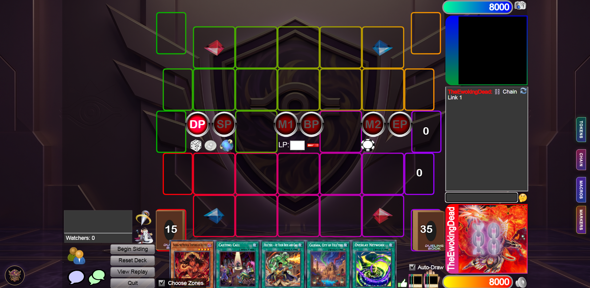
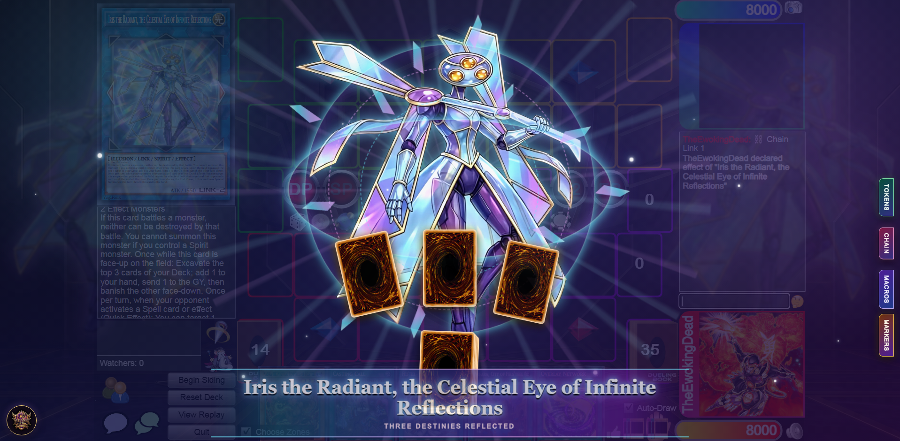
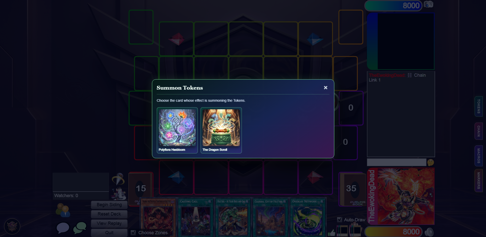
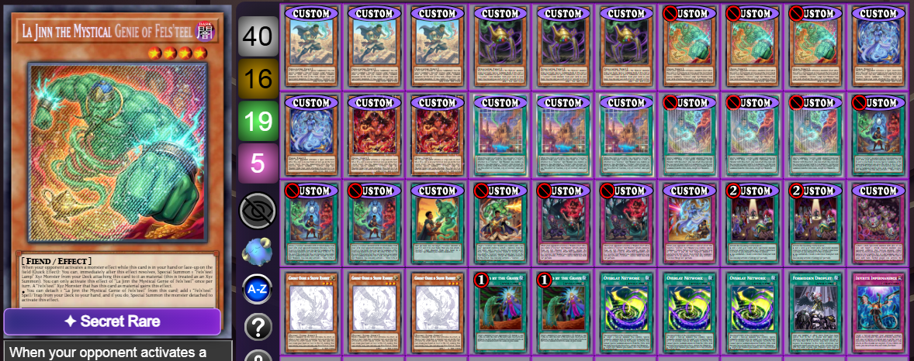
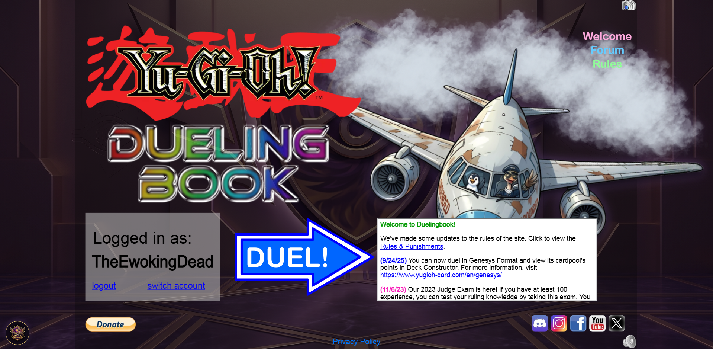

Card animations
Themed, pointer-transparent overlays play when configured cards are publicly declared or activated.
The YugiFAUX DuelingBook Companion adds league visuals, animated card moments, custom Tokens, macros, reminders, rarities, and guided Match setup—without changing DuelingBook’s authoritative game state.
Players without the Companion can still participate normally. You can disable it at any time.

What it adds
Every feature is optional and activated by the player. The Companion focuses on the moments and repeated tasks that make custom-card matches feel polished.
Themed, pointer-transparent overlays play when configured cards are publicly declared or activated.
Choose a supported source card, review its Token recipe, then summon through DuelingBook’s native zone selector.
Prepare a YugiFAUX Custom Cards Match with a review step before the Companion presses Host.
Send readable Chain declarations or run allowlisted, click-to-start shortcuts for your own cards and zones.
Place compact presentation-only reminders on face-up cards, with optional public announcements.
Assign local animated foil and name treatments in the Deck Constructor, including Pendulum-aware assets.
Inside the Companion

Cinematic card momentsConfigured public declarations can trigger themed animations for installed players and spectators.
Guided Token summonsReview supported recipes before choosing native Monster Zones.
A deck that looks like yoursSave animated rarity treatments locally by card name.
League visual themeUse the YugiFAUX background and rotating start-page characters, or restore the original appearance.During a duel
TOKENS, CHAIN, MACROS, and MARKERS live along the edge of the duel. They support player actions and communication; they never decide whether an action is legal.
Pick the source card, review the exact presentation recipe, confirm, and choose an open Monster Zone.
Declare Chain Links 1–8 in public chat, with optional sound and a brief profile animation for installed players.
Create click-to-run shortcuts from supported actions. Macro text is never executed as JavaScript.
Add private or publicly announced reminders, including End Phase expiration, to face-up cards.
Clear boundaries
Custom Token names, artwork, Levels, Attributes, Types, and reminder text are presentation only. DuelingBook still treats them as generic Tokens internally.
Privacy and safety
The Companion observes only the public parts of DuelingBook needed for its presentation features and stores preferences locally through Tampermonkey.
Installation
The Companion is a Tampermonkey userscript for Google Chrome and Microsoft Edge. It is not a standalone extension.
Add Tampermonkey from your browser’s extension store.
Use the installation button below to open the userscript in Tampermonkey.
Review the script details, then choose Install.
Click the YugiFAUX logo to open the Companion menu and choose your settings.
Before you install
No. It is optional, and players without it can participate normally. Companion-specific visuals are visible only where the relevant players or spectators have it installed.
No. Markers and Token details are presentation and reminders only. Players remain responsible for legal play, and DuelingBook remains the authoritative game state.
No. The Companion does not access opponent hidden zones, private duel logs, cookies, or login credentials.
Tampermonkey checks the public userscript URL for updates. You can also revisit the installation link to update manually.
Browser autoplay rules may require a click before audio can play. Because custom macros use DuelingBook’s current interface, they may need maintenance after DuelingBook updates.
Start in a consenting, unrated Custom Cards room. Use the emergency-disable option if you need to immediately stop Companion behavior.
Ready for your next Match?
Install the Companion, choose the features you want, and leave the rest off.